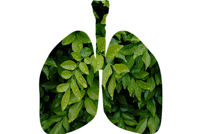
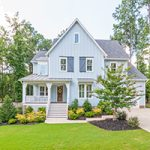

In the green landscapes of Atlantic County, the significance of maintaining healthy trees extends far beyond aesthetic appeal. At Ben Bivins Tree Experts, we understand that our actions have a profound impact on the local environment. Our commitment to providing top-tier tree care services—ranging from meticulous trimming and pruning to essential tree removal and stump grinding—plays a crucial role in fostering a healthier, more sustainable ecosystem. This blog explores the pivotal role that professional Atlantic County tree service plays in influencing the environment, both local and beyond. By delving into the benefits of maintaining vibrant and robust tree populations, we aim to highlight our dedication not only to the trees we care for but also to the communities we serve. Join us as we unravel the symbiotic relationship between expert tree care and environmental stewardship, showcasing how, together, we can contribute to a greener, more resilient Atlantic County.
The Role Healthy Trees Play in the Environment
Healthy trees are indispensable pillars of the environment. They serve as the lungs of the planet by absorbing carbon dioxide and releasing oxygen, thus playing a critical role in combating climate
change. By acting as natural air filters, capturing pollutants and fine particulates, they contribute to improved air quality and public health. Beyond air purification, trees are key players in water conservation, their dense canopies provide vital shade, and are foundational to biodiversity. By supporting a diverse range of flora and fauna, healthy trees contribute to the balance and resilience of ecosystems. In essence, the role of healthy trees in the environment is multifaceted, impacting everything from the air we breathe to the water we drink, and the biodiversity that enriches our planet.
Professional Atlantic County Tree Service Helps Maintain Healthy Trees

In addition to all the environmental benefits we’ve already mentioned, in urban environments, trees mitigate the heat island effect. Furthermore, they enhance the aesthetic appeal of neighborhoods and contribute to the mental and physical well-being of the community. The health and vitality of trees are essential for the sustainability of our planet, making their care and preservation a matter of utmost importance.
Experts in tree care are indispensable in the quest to maintain healthy trees. Our employees provide a range of services that address both the immediate needs and long-term health of trees. Trimming and pruning are vital for removing diseased, dead, or dying branches, thus preventing the spread of decay and pests, and encouraging a stronger, more resilient structure. These practices also ensure that trees grow in a manner that works with their surroundings. This reduces the risk of damage to property and individuals. Tree removal and stump grinding services are crucial when trees become a hazard or when they are beyond recovery. These services ensure the surrounding vegetation and soil are not adversely affected. By hiring Ben Bivins Tree Experts, you ensure that trees remain a beneficial asset to the environment. Our knowledge and skills in proper tree care techniques are critical for fostering tree health and vitality.
Contact Ben Bivins Tree Experts for Your Atlantic County Tree Service Needs
The vital role that trees play in our environment cannot be overstated. From producing oxygen to supporting biodiversity, healthy trees are essential for sustaining life and enhancing the quality of our surroundings. Professional Atlantic County tree service, such as those provided by Ben Bivins Tree Experts, are indispensable in maintaining the health and vitality of these natural assets. Through expert trimming, pruning, tree removal, and stump grinding, we ensure that our trees continue to thrive, contributing positively to the environment and the communities they inhabit. If you’re interested in learning more about how our services can benefit your trees and, by extension, the environment, don’t hesitate to contact us at 609-698-4992 or visit our services page. Let’s work together to preserve the natural beauty and ecological health of Atlantic County.